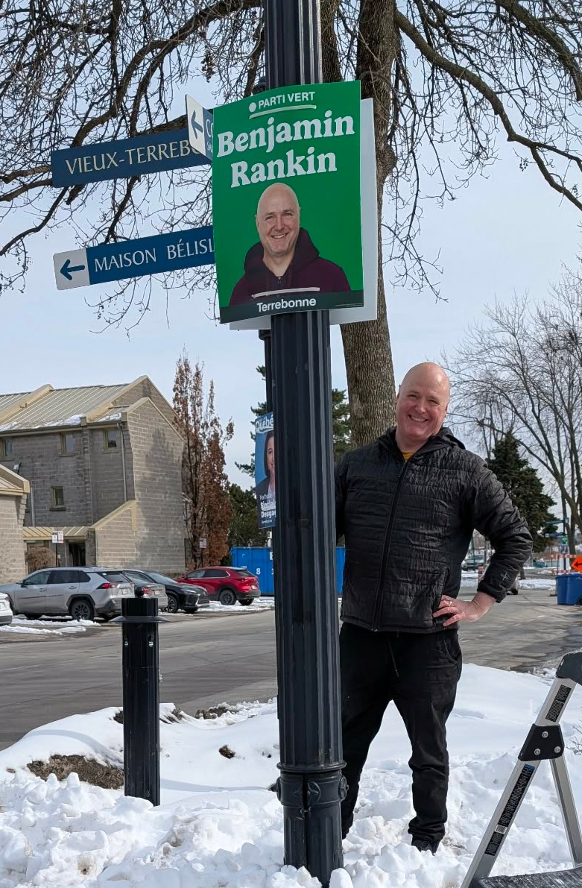

À propos de Benjamin Rankin
D'origine néo-zélandaise, j'ai grandi dans plusieurs pays avant de m'établir au Québec en 1990. Architecte depuis près de 30 ans, j'ai consacré ma carrière à bâtir des infrastructures publiques, notamment des écoles et des hôpitaux, tout en cherchant constamment à réduire notre empreinte écologique.
En tant que père d'une fille de 15 ans et écologiste passionné depuis les années 90, je me suis joint au Parti vert du Canada il y a 7 ans, car c'est la seule formation politique qui rejoint véritablement mes valeurs sociales et environnementales.
Les approches politiques du passé, trop souvent déconnectées de nos réalités citoyennes, ont laissé des traces profondes sur notre environnement et notre filet social. Aujourd'hui, je me présente comme votre candidat pour tourner la page et porter une vision rassembleuse. Ensemble, nous pouvons bâtir un avenir équitable, sain et durable pour Terrebonne, car il n'y a pas de planète B.
